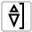
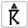

User guide¶

Getting Started with BARC¶
The BARC tool is split into three distinct sections, the Annotation toolbox, the Lab book and the Report generator.
The Annotation toolbox
The Annotation toolbox will allow the user to select from various icons and annotate or markup on the displayed meteorological data. It features specific weather/forecasting icons which the user can select and place on the active content. The toolbox hosts a variety of freeform drawing tools which enable the user to mark features such as strong temperature or moisture gradients with ease as well as highlight features that they wish to draw attention to.
The Lab book
The lab book allows the user to input notes and comments which can be linked to the active content and to the users annotations and markup. Both the comments and the annotations can be saved to allow the user to revisit their previous work.
The Report Generator
The report generator provides the capability to generate case studies and model evaluation feedback reports. It features a comprehensive search and allows users to find previous reports and events from keywords and metadata.
Initialising BARC
{kind=link}
To open the BARC use the chart icon (left) and BARC will appear in a pop out window on the right side of the browser.
The Annotation toolbox¶
The main toolbar provides the basic tools the user requires to start using BARC.

The toolbar contains two distinct sets of tools. The first set (A) are used for navigation, e.g zoom and move. The second (B) are freeform drawing tools. When you hover over any of the buttons a tooltip will give an overview of the functionilty of that button.

Selection and navigation tools¶

Undo
By using the undo tool you can easily undo multiple steps from your annotations.

Redo
By using the redo tool you can easily redo your last step.

Zoom in tool
By using this tool you can magnify the view by selecting the left mouse button.

Zoom out tool
This tool will reduce the the view of the image by left clicking the mouse.

Move/pan tool
This tool will move/pan the map view by holding the left mouse button and dragging. This used in conjuction with the zoom tool allow the user to define their view.

Box zoom tool
The box zoom tool allows the user to define a rectangular region to zoom. This is done by holding down the left mouse button and dragging to the desired area.

Mouse wheel zoom tool
This tool has the same effect as the zoom in and zoom out buttons but is triggered by the user moving the mouse wheel fowards to zoom in and backwards for zooming out.
Drawing and type tools¶

Box add tool
Use this tool to create a box to highlight features. To use this tool left click anywhere on the active content and then drag to a specfic point.

Freehand drawing tool
Allows the user to draw freehand on the displayed content. Line thickness and colour can be selected.

Polygon add tool
Use this tool to create polygons on the displayed content.
To add a point left click anywhere on the active content.
To move a point tap and drag the exisiting point to a new location.
To delete a point tap to select a point and then select the backspace key.
To move or delete multiple points at once:
Move selection Select point(s) with SHIFT+tap, then drag anywhere on the plot. Selecting and then dragging a specific point will move both.
Delete selection Select point(s) with SHIFT+tap, then press BACKSPACE while the mouse is within the plot area.

Polygon edit tool
Use this tool to edit exsisting polygons you have created.

Text add tool.
Use this tool to added text to the active content.
Meteorological symbols¶
BARC has a host of specfic meteorological symbols availble. These symbols are displayed in groups of similar weather features or characteristics. To select a group of symbols use the dropdown toolbar and then select the specfic symbol you want to use. More information about what the symbol represents is displayed when you hover over the icons. Group 0 - 9 reference the well established WMO present weather symbols.
Symbol |
Code |
Description |
|---|---|---|
0 |
Cloud development not observed or not observable |
|
1 |
Cloud generally dissolving or becoming less developed |
|
2 |
State of sky on the whole unchanged |
|
3 |
Clouds generally forming or developing |
|
4 |
Visibility reduced by smoke, e.g. veldt or forest fires, industrial smoke or volcanic ashes |
|
5 |
Haze |
|
6 |
Widespread dust in suspension in the air, not raised by wind at or near the station at the time of observation |
|
7 |
Dust or sand raised by wind at or near the station at the time of observation, but not well developed dust whirl(s) or sand whirl(s), and no duststorm or sandstorm seen; or, in the case of ships, blowing spray at the station |
|
8 |
Well developed dust or sand whirl(s) seen at or near the station during the preceding hour or at the time of observation, but no dust storm or sandstorm |
|
9 |
Duststorm or sandstorm within sight at the time of observation, or at the station during the preceding hour |
|
10 |
Mist |
|
11 |
Patches of shallow fog or ice fog at the station, whether on land or sea not deeper than about 2 metres on land or 10 metres at sea |
|
12 |
More or less continuous shallow fog or ice fog at the station, whether on land or sea, not deeper than about 2m/land or 10m/sea |
|
13 |
Lightning visible, no thunder heard |
|
14 |
Precipitation within sight, not reaching the ground or the surface of the sea |
|
15 |
Precipitation within sight, reaching the ground or the surface of the sea, but distant, i.e. > 5 km from the station |
|
16 |
Precipitation within sight, reaching the ground or the surface of the sea, near to, but not at the station |
|
17 |
Thunderstorm, but no precipitation at the time of observation |
|
18 |
Squalls at or within sight of the station during the preceding hour or at the time of observation |
|
19 |
Funnel clouds at or within sight of the station during the preceding hour or at the time of observation |
|
20 |
Drizzle (not freezing) or snow grains, not falling as showers, during the preceding hour but not at the time of observation |
|
21 |
Rain (not freezing), not falling as showers, during the preceding hour but not at the time of observation |
|
22 |
Snow, not falling as showers, during the preceding hour but not at the time of observation |
|
23 |
Rain and snow or ice pellets, not falling as showers; during the preceding hour but not at the time of observation |
|
24 |
Freezing drizzle or freezing rain; during the preceding hour but not at the time of observation |
|
25 |
Shower(s) of rain during the preceding hour but not at the time of observation |
|
26 |
Shower(s) of snow, or of rain and snow during the preceding hour but not at the time of observation |
|
|  | 27 |
Shower(s) of hail, or of rain and hail during the preceding hour but not at the time of observation |
28 |
Fog or ice fog during the preceding hour but not at the time of observation |
|
29 |
Thunderstorm (with or without precipitation) during the preceding hour but not at the time of observation |
|
30 |
Slight or moderate duststorm or sandstorm, has decreased during the preceding hour |
|
31 |
Slight or moderate duststorm or sandstorm, no appreciable change during the preceding hour |
|
32 |
Slight or moderate duststorm or sandstorm, has begun or has increased during the preceding hour |
|
33 |
Severe duststorm or sandstorm, has decreased during the preceding hour |
|
34 |
Severe duststorm or sandstorm, no appreciable change during the preceding hour |
|
35 |
Severe duststorm or sandstorm, has begun or has increased during the preceding hour |
|
36 |
Slight/moderate drifting snow, generally low (below eye level) |
|
37 |
Heavy drifting snow, generally low (below eye level) |
|
38 |
Slight/moderate blowing snow, generally high (above eye level) |
|
39 |
Heavy blowing snow, generally high (above eye level) |
|
40 |
Fog or ice fog at a a distance at the time of observation, but not at station during the preceding hour, the fog or ice fog extending to a level above that of the observer |
|
41 |
Fog or ice fog in patches |
|
42 |
Fog/ice fog, sky visible, has become thinner during the preceding hour |
|
43 |
Fog/ice fog, sky invisible, has become thinner during the preceding hour |
|
44 |
Fog or ice fog, sky visible, no appreciable change during the past hour |
|
45 |
Fog or ice fog, sky invisible, no appreciable change during the preceding hour |
|
46 |
Fog or ice fog, sky visible, has begun or has become thicker during preceding hour |
|
47 |
Fog or ice fog, sky invisible, has begun or has become thicker during the preceding hour |
|
48 |
Fog, depositing rime, sky visible |
|
49 |
Fog, depositing rime, sky invisible |
|
50 |
Drizzle, not freezing, intermittent, slight at time of ob. |
|
51 |
Drizzle, not freezing, continuous, slight at time of ob. |
|
52 |
Drizzle, not freezing, intermittent, moderate at time of ob. |
|
53 |
Drizzle, not freezing, continuous, moderate at time of ob. |
|
54 |
Drizzle, not freezing, intermittent, heavy at time of ob. |
|
55 |
Drizzle, not freezing, continuous, heavy at time of ob. |
|
56 |
Drizzle, freezing, slight |
|
57 |
Drizzle, freezing, moderate or heavy (dense) |
|
58 |
Rain and drizzle, slight |
|
59 |
Rain and drizzle, moderate or heavy |
|
60 |
Rain, not freezing, intermittent, slight at time of ob. |
|
61 |
Rain, not freezing, continuous, slight at time of ob. |
|
62 |
Rain, not freezing, intermittent, moderate at time of ob. |
|
63 |
Rain, not freezing, continuous, moderate at time of ob. |
|
64 |
Rain, not freezing, intermittent, heavy at time of ob. |
|
65 |
Rain, not freezing, continuous, heavy at time of ob. |
|
66 |
Rain, freezing, slight |
|
67 |
Rain, freezing, moderate or heavy |
|
68 |
Rain or drizzle and snow, slight |
|
69 |
Rain or drizzle and snow, moderate or heavy |
|
70 |
Intermittent fall of snowflakes, slight at time of ob. |
|
71 |
Continuous fall of snowflakes, slight at time of ob. |
|
72 |
Intermittent fall of snowflakes, moderate at time of ob. |
|
73 |
Continuous fall of snowflakes, moderate at time of ob. |
|
74 |
Intermittent fall of snowflakes, heavy at time of ob. |
|
75 |
Continuous fall of snowflakes, heavy at time of ob. |
|
76 |
Diamond dust (with or without fog) |
|
77 |
Snow grains (with or without fog) |
|
78 |
Isolated star, like snow crystals (with or without fog) |
|
79 |
Ice pellets |
|
80 |
Rain shower(s), slight |
|
81 |
Rain shower(s), moderate or heavy |
|
82 |
Rain shower(s), violent |
|
83 |
Shower(s) of rain and snow, slight |
|
84 |
Shower(s) of rain and snow, moderate or heavy |
|
85 |
Snow shower(s), slight |
|
86 |
Snow shower(s), moderate or heavy |
|
87 |
Shower(s) of snow pellets or small hail, with or without rain or rain and snow mixed, slight |
|
88 |
Shower(s) of snow pellets or small hail, with or without rain or rain and snow mixed, moderate or heavy |
|
89 |
Shower(s) of hail, with or without rain or rain and snow mixed, not associated with thunder, slight |
|
90 |
Shower(s) of hail, with or without rain or rain and snow mixed, not associated with thunder, moderate or heavy |
|
91 |
Slight rain at time of observation, Thunderstorm during the preceding hour but not at time of observation |
|
92 |
Moderate or heavy rain at time of observation, Thunderstorm during the preceding hour but not at time of observation |
|
93 |
Slight snow, or rain and snow mixed or hail at time of observation, Thunderstorm during the preceding hour but not at time of observation |
|
94 |
Moderate or heavy snow, or rain and snow mixed or hail at time of observation, Thunderstorm during the preceding hour but not at time of observation |
|
95 |
Thunderstorm, slight or moderate, without hail, but with rain and/or snow at time of observation |
|
96 |
Thunderstorm, slight or moderate, with hail at time of ob. |
|
97 |
Thunderstorm, heavy, without hail, but with rain and/or snow at time of observation |
|
98 |
Thunderstorm combined with dust/sandstorm at time of observation |
|
|  | 99 |
Thunderstorm, heavy with hail at time of observation |
{kind=link}
{kind=link}
{kind=link}
{kind=link}
{kind=link}
{kind=link}
{kind=link}
{kind=link}
{kind=link}
{kind=link}
{kind=link}
{kind=link}
{kind=link}
{kind=link}
{kind=link}
{kind=link}
{kind=link}
{kind=link}
{kind=link}
{kind=link}
{kind=link}
{kind=link}
{kind=link}
{kind=link}
{kind=link}
{kind=link}
{kind=link}
{kind=link}
{kind=link}
{kind=link}
{kind=link}
{kind=link}
{kind=link}
{kind=link}
{kind=link}
{kind=link}
{kind=link}
{kind=link}
{kind=link}
{kind=link}
{kind=link}
{kind=link}
{kind=link}
{kind=link}
{kind=link}
{kind=link}
{kind=link}
{kind=link}
{kind=link}
{kind=link}
{kind=link}
{kind=link}
{kind=link}
{kind=link}
{kind=link}
{kind=link}
{kind=link}
{kind=link}
{kind=link}
{kind=link}
{kind=link}
{kind=link}
{kind=link}
{kind=link}
{kind=link}
{kind=link}
{kind=link}
{kind=link}
{kind=link}
{kind=link}
{kind=link}
{kind=link}
{kind=link}
{kind=link}
{kind=link}
{kind=link}
{kind=link}
{kind=link}
{kind=link}
{kind=link}
{kind=link}
{kind=link}
{kind=link}
{kind=link}
{kind=link}
{kind=link}
{kind=link}
{kind=link}
{kind=link}
{kind=link}
{kind=link}
{kind=link}
{kind=link}
{kind=link}
{kind=link}
{kind=link}
{kind=link}
{kind=link}
{kind=link}
{kind=link}